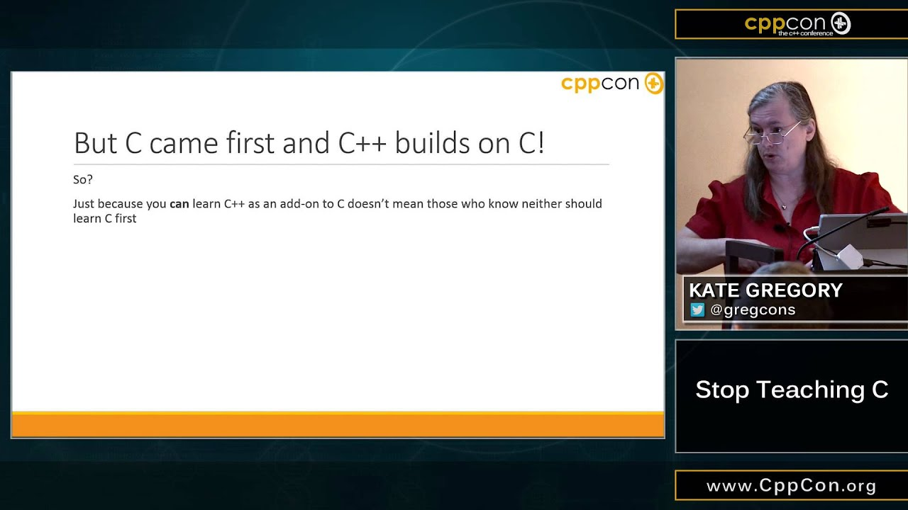

<!-- #region Intro -->

<section full data-background-image="./img/27.png" no-footer change-footer="Introduction">
</section>

<section my-columns>
    <div>
        
        <br/>
        "Stop Teaching C"
        <br/>
        <a href="https://www.youtube.com/watch?v=YnWhqhNdYyk" style="font-size: 50%;">https://www.youtube.com/watch?v=YnWhqhNdYyk</a>
    </div>
</section>

<include src="./regions/intro.html"></include>

<section data-markdown class="list-fade-in-then-semi-out">
    <textarea data-template>
        ## About me
        * Canadian
        * Mechanical engineering degree
        * I like twisty puzzles
         <!-- .element style="position:absolute; height:75%; right:0; top:12%;"-->
        * C++ standards committee (WG21)
        * Winnipeg C++ Developers meet up group
        * CppNorth volunteer coordinator
    </textarea>
</section>

<!-- #endregion Intro -->

<section data-markdown signpost change-footer="Natvis setup">
    Natvis setup
</section>

<include src="./regions/1-setup-natvis.html"></include>

<section data-markdown signpost change-footer="Writing Natvis">
    Writing Natvis
</section>

<include src="./regions/2-write-natvis.html"></include>

<section data-markdown signpost change-footer="GDB pretty-printer setup">
    GDB pretty-printer setup
</section>

<include src="./regions/3-setup-gdb.html"></include>

<section data-markdown signpost change-footer="Writing GDB pretty-printers">
    Writing GDB pretty-printers
</section>

<include src="./regions/4-write-gdb.html"></include>


<!-- #region Conclusion -->

<section signpost change-footer="Conclusion">
    Conclusion
</section>

<section data-markdown class="list-fade-in-then-semi-out">
    <textarea data-template>
        ## Write visualizers
        * Now you know how!
        * Writing a visualizer is accessible to you!
        * Colleagues will thank you
        * Your future self will thank you
    </textarea>
</section>

<section data-markdown class="list-fade-in-then-semi-out">
    <textarea data-template>
        ## Ultimately I want
        * Developer empowerment
        * Removal of barriers to understanding
        * Libraries that are more accessible to use
        * Widely consumed libraries to have debugger support
    </textarea>
</section>

<section my-columns>
    <div style="width:100%;">
        <span>Our work is about more than the source code</span>
        <br/>
        <br/>
        <span class="fragment">Our work is about people</span>
        <br/>
        <br/>
        <span class="fragment">Let's make our code more accessible</span>
    </div>
</section>

<!-- #endregion Conclusion -->
